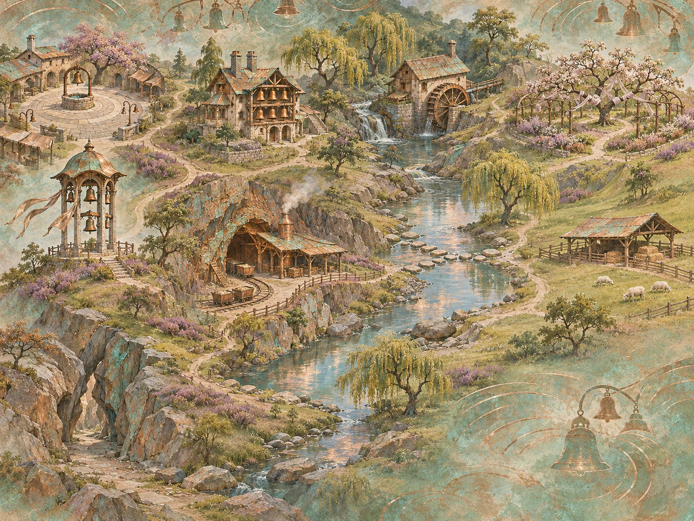
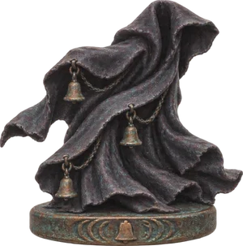
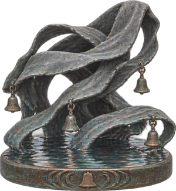

Долина без последнего звона
Карты и фигурки ведущего
Игровой комплект
3 игрока · 4 игрока · 5 игроков · 6 игроков · 7 игроков
Карта кампании

Поля боя


Герои


Персонажи ведущего


Противники


Садовая складка 3Садовая складка 1Садовая складка 4Садовая складка 2Садовая складка 5

Мельничная складка 2Мельничная складка 1Мельничная складка 5Мельничная складка 3Мельничная складка 4 Башенная складка 3Башенная складка 5Башенная складка 4Башенная складка 1Башенная складка 2
Башенная складка 3Башенная складка 5Башенная складка 4Башенная складка 1Башенная складка 2